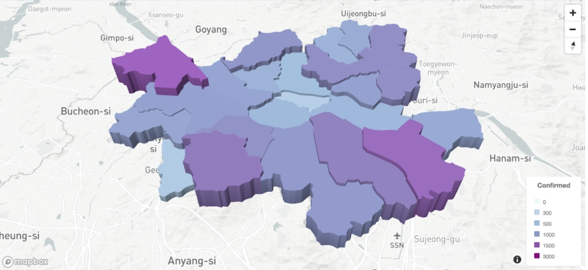
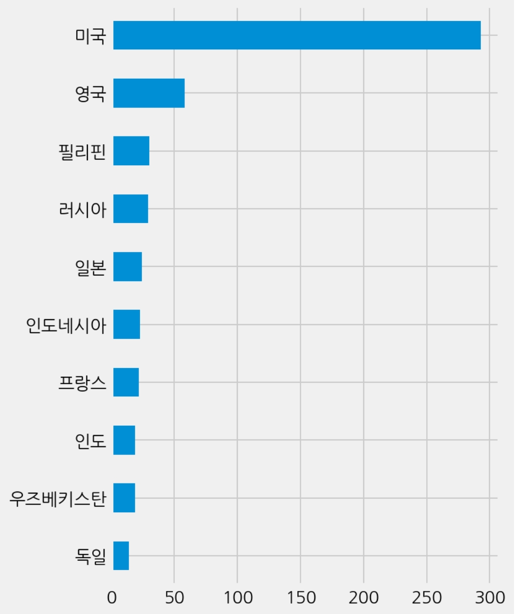
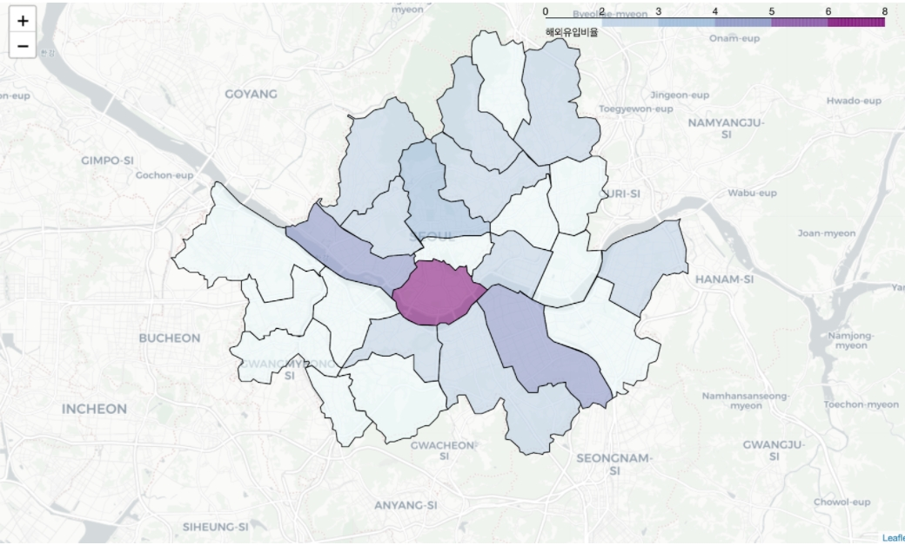

데이터 시각화
By 배소린, 유세영
국가별 코로나 확진자, 회복자 사망자 추이 및 서울시 코로나 발생 현황 데이터를 시각화한 보고서로 시계열 형태의 보기 쉬운 영상 및 flourish의 임베디드 데이터 시각화 툴을 이용하여 일반인 이용자의 이해를 높인다.
1. 국가별 코로나 데이터 시각화
국가별 코로나 누적 확진자, 회복자, 사망자 수 추이를 시각화했습니다. 시각화를 위해 존스 홉킨스 대학 시스템 사이언스 · 엔지니어링 센터(JHU CCSE)에서 제공하는 COVID-19 데이터를 사용하였습니다. 전처리를 위해 일별 데이터가 있는 csv 파일에서 필요한 컬럼(확진자수, 회복자수, 사망자수, 국가/지역)을 추출하였습니다. 한 국가 내에서 지역별로 데이터가 나누어져 있는 경우는 합산하여 하나의 국가로 나타내었습니다. 이렇게 정리한 데이터프레임에 각 국가의 국기 이미지를 사용하기 위해 ISO2 국가 코드를 이용하여 https://www.countryflags.io/ 에서 제공하는 국기 이미지 링크를 데이터프레임에 추가하였습니다.
이렇게 만들어진 데이터프레임을 csv 파일로 저장하여 app.flourish.studio 에서 bar chart race 형태로 시각화를 하였습니다. x축은 누적 확진자/회복자/사망자 수를 나타내고, y축은 국가명을 나타내어 2020/01/22 부터 2021/02/10 간의 변화를 볼 수 있습니다.
단, 회복자 수의 경우 데이터가 없는 국가도 있어 해당 국가의 회복자수를 0명으로 처리했고, 미국의 경우 2020/12/15 이후로 전부 0으로 나와있어 2020/12/14~2021/02/10 동안은 회복자 수의 변화가 없습니다.
1.1. 누적 확진자
코로나 바이러스가 중국발이기 때문에 처음에는 중국의 확진자 수가 가장 많았고 주변국인 한국의 확진자수도 빠르게 증가하였다. 3월부터는 이란과 이탈리아에 빠르게 확산되면서 유럽(스페인, 독일, 프랑스, 영국 등)의 확진자 수가 증가하였다. 3월 중후반부터는 미국의 확진자 수가 무서운 속도로 증가했다. 7월에는 브라질과 인도의 확진자 수가 증가했고 9월에는 인도의 확진자 수가 브라질의 확진자 수를 넘어섰다. 12월에는 영국발 변이 바이러스로 인해 영국의 확진자수가 현재까지도 많이 증가하였다.
1.2. 누적 사망자수
초기에는 중국의 사망자 수가 가장 많았고 3월에는 이탈리아를 비롯한 스페인, 프랑스, 영국 등 많은 유럽국가에서 사망자 수가 증가했다. 4월에는 미국의 사망자 수가 압도적으로 증가했으며 6월~8월에는 브라질, 멕시코의 사망자 수도 크게 증가했다. 9월에는 인도의 사망자 수가 멕시코를 제치고 3위가 되었지만 1월에 다시 멕시코가 인도를 역전했다. 2020년 말부터 영국의 사망자 수도 점차 증가하였다.
1.3. 누적 회복자수
초기에는 중국의 확진자 수가 많은만큼 회복자 수도 가장 많았다. 누적 확진자 수 추이와 비슷한 동향을 보이며, 4월부터는 유럽의 회복자 수가 빠르게 증가했다. 5월부터는 미국의 회복자 수가 많아졌다. 7, 8월에는 브라질과 인도의 회복자 수가 많아지고 미국은 3위를 차지했다. 1~3위는 인도, 브라질, 미국이 계속 차지했고 9월~12월은 남미 국가들의 회복자 수가 증가했다. 12월 중순부터는 러시아와 터키의 회복자 수가 증가했다.
2. 서울시 코로나 현황 시각화
서울시 코로나 19 발생 동향(‘https://www.seoul.go.kr/coronaV/coronaStatus.do') 에서 제공하는 서울시 코로나바이러스 감염증(COVID-19) 자료를 통해 서울시 코로나 19 현황을 시각화하려고 합니다.
2.1. 최근 확진자
2020년 12월 5일에 발생한 10000번 확진자부터 (2021년 2월 12일 13시) 확진자까지 서울시 일일 확진자 증가 추이를 라인 차트로 시각화하였습니다. 12월 17일경 가장 많은 확진자가 발생했음을 알 수 있습니다.
2.2. 서울시 월별 신규 확진자 추이
다음으로는 서울시 첫 확진자가 발생한 2020년 1월부터 2021년 2월까지 월별 신규 확진자 추이를 바 차트로 시각화하였습니다. 12월의 경우 다른 달에 비해 확진자 발생률이 눈에 띄게 증가한 것을 알 수 있습니다. 이는 12월 19일 발생한 특히 서울 동부구치소에서 발생한 대규모 집단 감염 사태와 연관이 있음을 짐작할 수 있습니다.
2.3. 자치구별 확진자 현황
자치구별 확진자 현황을 mapbox 라이브러리를 이용하여 3D 단계 구분도(Choropleth map)으로 나타냈습니다. 확진자가 많이 발생한 강서구와 송파구의 경우 짙은 색과 타 시도에 비해 높이가 높게 매핑된 것을 알 수 있습니다. 옆의 legend는 매핑되는 높이의 범위를 나타냅니다.
2.4. 서울시 COVID-19 접촉력 빈도수 상위 15항목
다음으로는 서울시 코로나바이러스 감염증(COVID-19) 접촉력 빈도수 상위 15개 항목을 도넛 차트로 시각화하였습니다. ‘기타 확진자 접촉’이 가장 일어났으며, 그 뒤를 ‘감염경로 조사 중’과 ‘동부구치소 관련’ 항목이 뒤를 잇고 있음을 확인할 수 있습니다. 8월 발생한 성북구 사랑제일교회 집단 감염 사례 역시 높은 빈도를 보이고 있습니다.
2.5. 월별 접촉력 상위 10항목
다음은 월별 접촉력 상위 10개 항목을 파이 차트로 표시하였습니다. 월별 가장 주요한 감염 원인을 한눈에 파악할 수 있습니다.
2.6. 해외유입 확진자 여행력 상위 10개국
다음으로는 해외유입 확진자들이 방문한 상위 10개국을 나타낸 그래프입니다. 미국을 방문했던 확진자들의 비율이 가장 높게 나타난 것을 알 수 있으며, 그 뒤로는 영국과 필리핀, 러시아 순으로 이어집니다.
2.7. 자치구별 해외유입비율
마지막으로는 자치구별 전체 확진 수와 해외 유입 확진 수를 비교한 해외유입비율 그래프를 단계 구분도(Choropleth map)으로 나타냈습니다. 해외 입국 혹은 해외 감염의 경우 용산구에서 발생 빈도가 높게 나타났으며, 마포구가 두 번째로 높은 것을 확인할 수 있습니다.